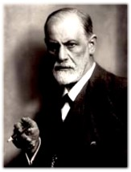

Sigmund Freud nasce a Freiberg (l'odierna Pribor), in Moravia, il 6 maggio 1856, da una famiglia di ebrei commercianti che qualche anno dopo si stabilisce definitivamente a Vienna.
Nel 1860, Freud vi frequenta il ginnasio e la facoltà di medicina, laureandosi nel 1881 in fisiologia. Lavora per un po' nel laboratorio di neurofisiologia diretto da Brucke e, nel 1882, per motivi economici, abbandona la ricerca scientifica e si dedica alla professione medica, specializzandosi in neurologia.
Nel 1885 ottiene una borsa di studio e va a Parigi, iniziando a colllaborare con Charcot, che fa largo uso dell'ipnosi e teorizza una base psichica (e non fisiologica) per le nevrosi e per l'isteria. Nel 1886 sposa Martha Bernays, da cui ha sei figli e nel 1889 passa un periodo di studio a Nancy, dove studia l'ipnosi.
Tornato a Vienna, si dedica completamente alla professione di neurologo. Nel frattempo stringe amicizia con Josef Breuer, con cui pubblica nel 1895 "Studi sull'isteria" e con cui inizia l'avventura e la scoperta della psicoanalisi. Nel 1896, a seguito della morte del padre, vive un periodo di profonda sofferenza che tenta di superare attraverso l'analisi dei suoi stessi conflitti profondi (l'autoanalisi è sopratutto analisi dei sogni).
In seguito Freud si stacca dalla pratica ipnotica ed elabora teorie indipendenti riguardo all'interpetrazione di questi eventi passsati "rimossi" dalla coscienza, arrivando a formulare una distinzione 'topografica' della psiche in inconscio (costituito da quegli eventi mentali di cui non siamo consapevoli, da quei ricordi che devono affiorare tramite la terapia), preconscio (costituito da elementi latenti, facilmente riassumibili alla coscienza) e conscio (costituita da tutto ciò di cui siamo consapevoli); è una distinzione in entità quali l'es (impulsi irrazionali ed intuitivi) l'io (in gran parte cosciente, con qualche elemento preconscio) e il super-io (istanza normativo-morale, in gran parete inconscia).
Nel 1900 Freud pubblica il poderoso lavoro svolto su se stesso e sui suoi pazienti: "L'interpretazione dei sogni". Da allora in poi si dedica completamente ad approfondire i fondamenti della sua scoperta, che ha, soprattutto all'inizio, moltissimi denigratori e critici e nel 1901 esce "Psicopatologia della vita quotidiana". Nel 1902 l'università di Vienna lo nomina professore straordinario e un gruppo di studiosi interessati ai temi dell psicoanalisi comincia a incontrarsi a casa sua tutti i mercoledì sera.
Nel 1908 si tiene il primo Congresso della Società Psicoanalitica Internazionale e, intanto continuano ad uscire altre opere di Freud, tra le quali ricordiamo: "Tre saggi sulla teoria sessuale" (1905) e "Totem e tabù" (1913).
Con l'avvento del nazismo, la psicoanalisi è osteggiata in quanto scienza ebraica: nel 1933 a Berlino vengono bruciati i testi di Freud e dei suoi allievi. Egli cerca di resistere il più possibile all'avanzata della barbarie nazista, ma nel 1938 è costretto ad emigrare con la famiglia a Londra dove viene accolto con tutti gli onori. Lì vive ancora un anno e poi muore, per un cancro alla mascella, il 23 settembre 1939.